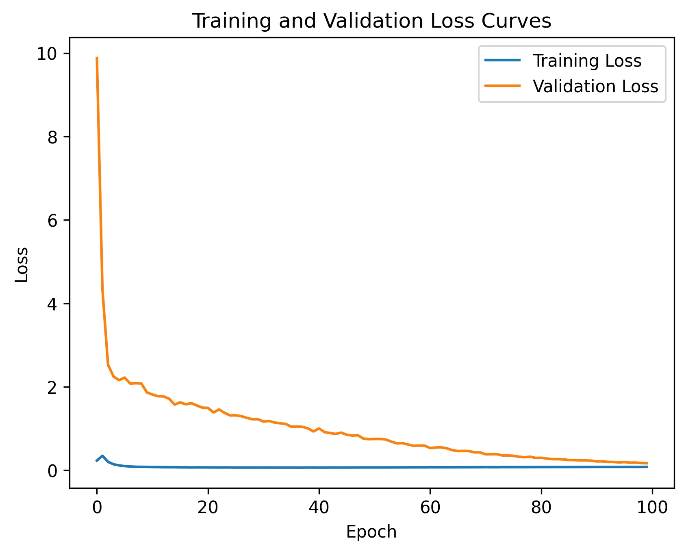

Business problem: missing a defaulter
A classifier can look accurate while missing many of the cases that matter. This academic project examines loan-default detection with recall as a priority: identifying actual defaults rather than optimising headline accuracy alone.
- How many actual defaults does the model flag?
- How much additional review work comes from false positives?
- How does the decision threshold change those two quantities?
- Does the evaluation represent information available at the time a lending decision would be made?
The cost of a false negative can include credit loss; a false positive can cause unnecessary review or a missed lending opportunity. Actual cost depends on exposure, recovery and the decision process, so this project does not assign invented financial savings.
Data, role & evaluation scope
The repository contains loan_data.xlsx, one training script and a loss-curve image. The target is converted to a binary loan_is_bad label. The original source, sample provenance and observation-time definitions are not documented in the README.
The showcased contribution is the classification workflow and its business-metric interpretation. This is academic work; individual versus team ownership and the precise course context are not recorded in the repository.
Approach & why it was used
- 01Prepare features and binary target
- 0280% train / 10% validation / 10% test
- 03Fit scaling and SMOTEENN on training only
- 04Train regularised neural network
- 05Evaluate at 0.5 threshold
| Choice | Reasoning | Trade-off |
|---|---|---|
| Recall as a priority | Focuses attention on missed defaults | Must be considered alongside false-positive burden and the cost of each error. |
| SMOTEENN on training data | Combines minority oversampling with removal of ambiguous neighbours | Changes the training distribution and may remove useful boundary examples. |
| Neural network | Explores non-linear relationships in a tabular classification task | No evidence here establishes superiority to simpler models. |
| L2, dropout and learning-rate decay | Regularise training and moderate parameter updates | These controls do not prove absence of overfitting or data leakage. |
Data preparation & modelling
- Drop the specified identifier, date and other excluded columns; convert the target to binary.
- Extract numeric postcode prefixes; one-hot encode home ownership and ordinally map loan sub-grades.
- Remove rows with missing revolving-utilisation values.
- Fit normalisation on the training partition; apply it to validation and test without refitting.
- Apply SMOTEENN only to normalised training records, leaving test prevalence unchanged.
- Train dense layers of 30, 30, 15 and 15 neurons with L2, two 50% dropout layers and a sigmoid output for 100 epochs.
The code uses a 0.5 probability threshold. It does not show threshold optimisation, calibrated probabilities, a temporal holdout or a benchmark against logistic regression. These are future checks, not completed features.
Reported results & their meaning
| Metric | Reported result | Interpretation |
|---|---|---|
| Recall | 97.25% | Of actual defaults in the reported evaluation, approximately 97 in 100 were flagged. |
| Precision | 69.66% | Of positive predictions, approximately 70 in 100 were actual defaults. |
| Accuracy | 93.10% | Overall classification correctness; less informative on its own when classes are imbalanced. |
| False-negative rate | 2.75% | The complement of recall for the positive class. |
The precision result means approximately 30 of every 100 flagged cases were false positives in that evaluation. That is the practical trade-off behind the high recall. These are proportions illustrating the reported rates, not invented confusion-matrix counts.
Visual evidence

What the result could support
- Use the experiment to discuss risk-review prioritisation, not as an automated approval or rejection policy.
- Compare simpler models under the same leakage-safe evaluation and error-cost assumptions.
- Choose a threshold against a documented operational objective and available review capacity.
- Audit feature availability at application time before interpreting recall as prospective lending performance.
Challenges & limitations
- Potential outcome leakage is a central unresolved concern: audit all retained payment/balance features against the intended prediction time.
- A random split does not test future-period performance and may understate drift risk.
- The README contains metrics, but no saved evaluation artifact ties them to a reproducible trained model.
- Postcode encoding, missing-data removal and resampling need sensitivity checks; model quality and fairness across relevant groups have not been established.
- Neither financial benefit nor production suitability follows from a high recall figure.
What I would improve next
- Establish the source, decision-time feature set and temporal split before further model comparisons.
- Benchmark logistic regression and tree models with stratified development folds where appropriate.
- Save evaluation artifacts, confusion matrices and environment versions; keep the final test set untouched.
- Evaluate threshold cost, calibration, explainability and stability across time.
- Add SHAP or other suitable explanations only after establishing leakage-safe predictive value.
What this demonstrates
Analytical judgement about metric selection, class imbalance and the operational meaning of false positives and false negatives. The case is supporting evidence of technical capability within a broader customer and commercial analyst profile.